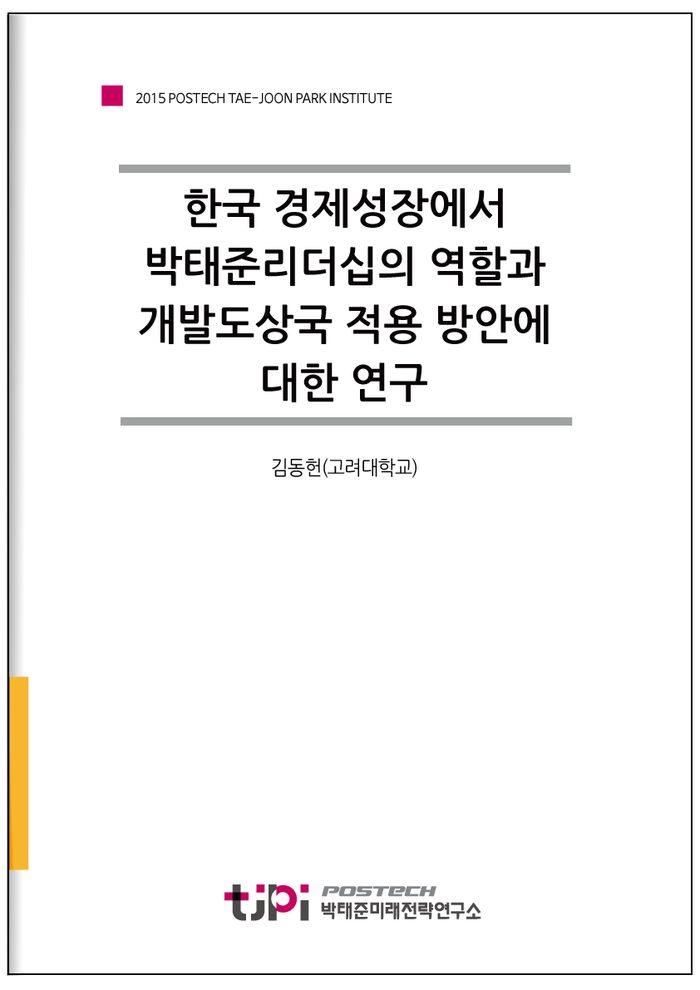
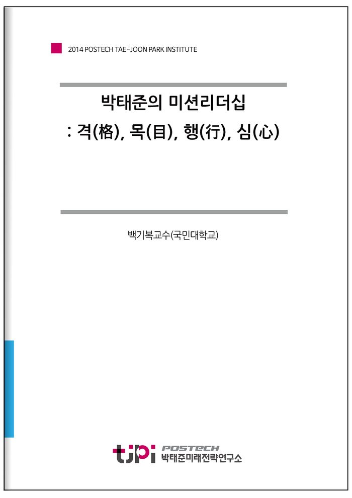
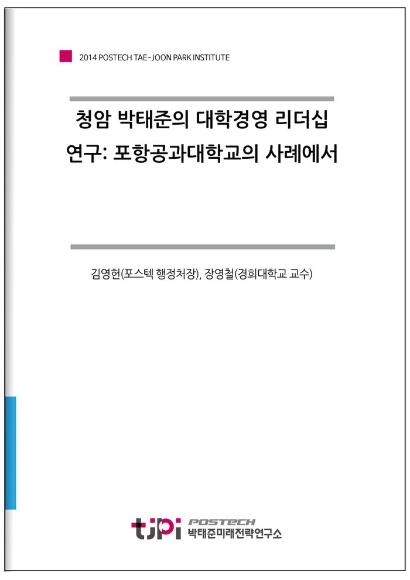
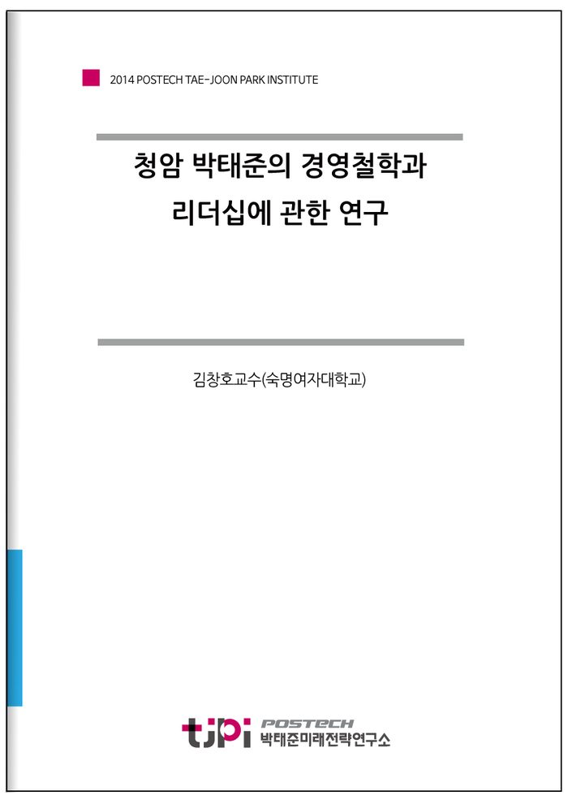
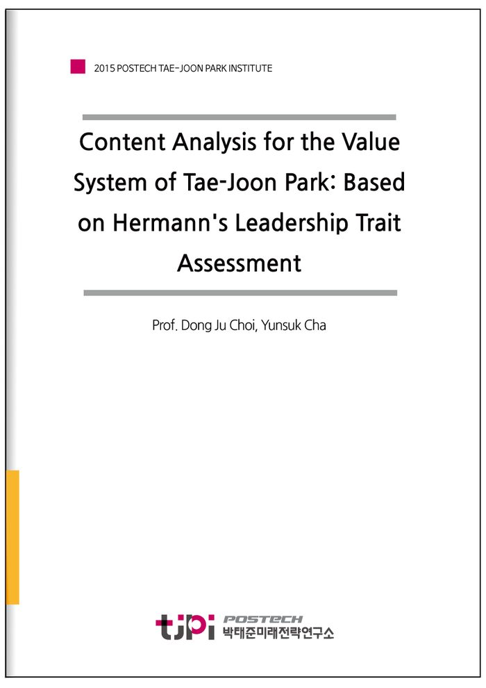
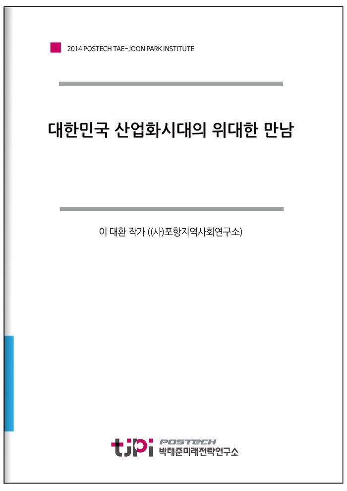
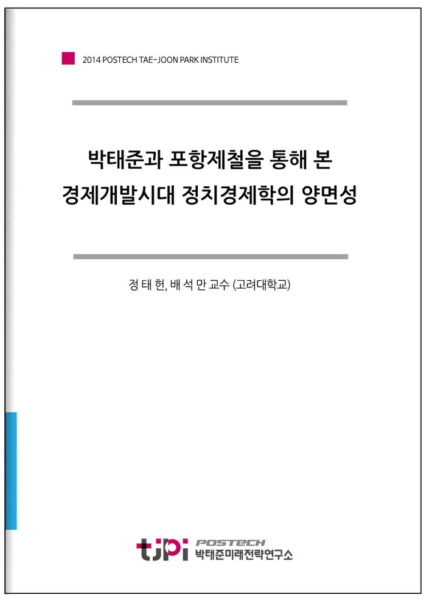
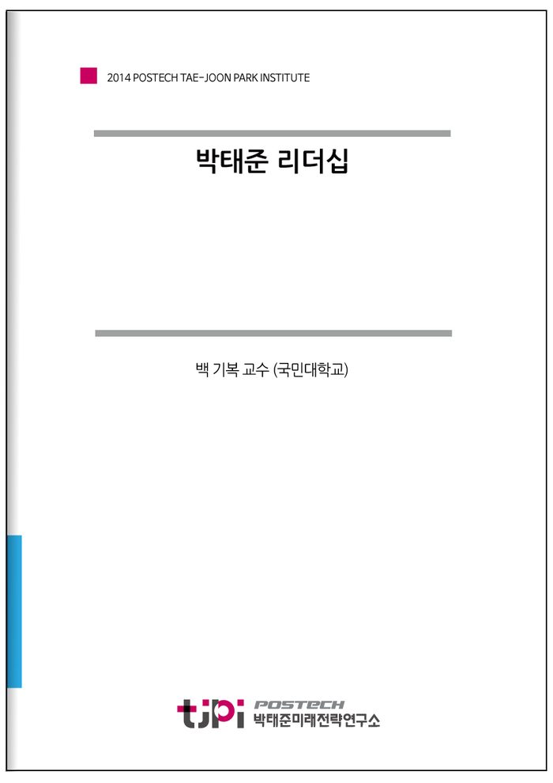
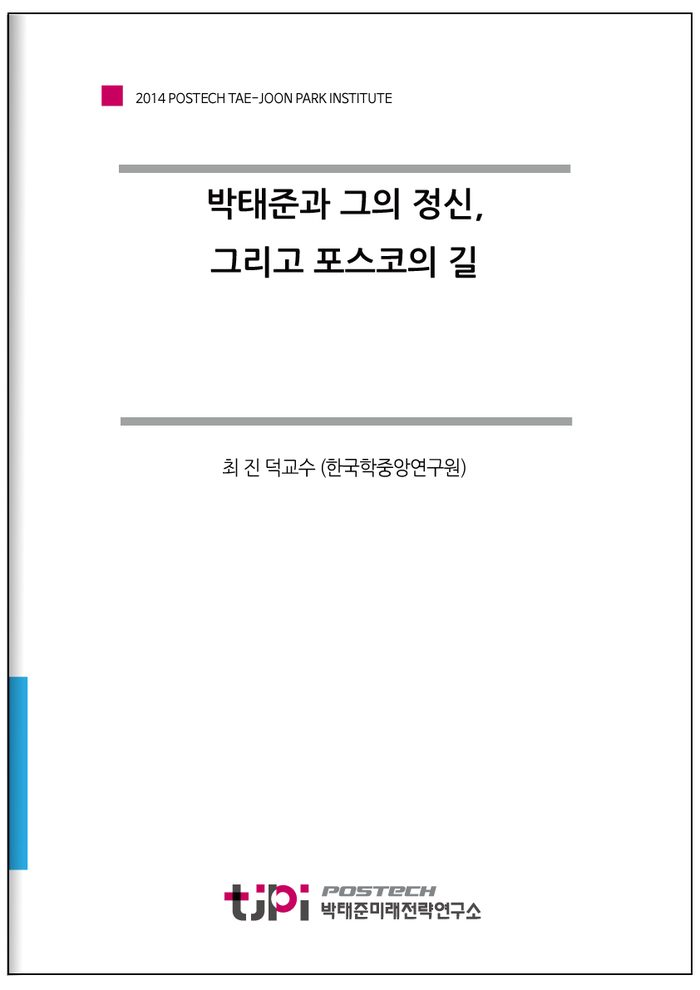

전체 10건

[2015 연구논문] 한국 경제성장에서 박태준리더십의 역할과 개발도상국 적용 방안에 대한 연구
김동헌(고려대학교) · 2015.10.01
한국은 특별한 부존자원이 없고 산업기반이 거의 전무한 세계 최빈국 상황에서 공업화 및 경제자유화를 일구어 왔으며, 이는 2011년 기 준 경제규모 세..

[2014 연구논문] 박태준의 미션리더십: 격(格), 목(目), 행(行), 심(心)
백기복교수(국민대학교) · 2014.10.01
청암 리더십 : 격(格), 목(目), 행(行), 심(心)청암(靑巖) 박태준은 근대 한국을 대표하는 리더다. 그는 일제시대부터 오늘날에 이르기까지 한국근대사를 ..

[2014 연구논문] 청암 박태준의 대학경영 리더십 연구: 포항공과대학교의 사례에서
김영헌(포스텍 행정처장), 장영철(경희대학교 교수) · 2014.10.01
포항공과대학교(이하 ‘포항공대’로 기술)의 설립, 성장 및 발전은 우리나라 고등교육 발전의 기반이 되었으며, 우리나라 대학의 역량과 수준을 세계..

[2014 연구논문] 청암 박태준의 경영철학과 리더십에 관한 연구
김창호교수(숙명여자대학교) · 2014.10.01
우리는 한 국가나 조직의 흥망성쇠가 리더와 리더십에 달려 있음을 역사를 통해 알고 있다. 세종대왕, 이순신 등의 역사적 인물들은 성공한 리더로 추�..

[2014 연구논문] 박태준 리더십
백기복교수(국민대학교) · 2014.10.01
박태준 리더십 스탠더드의 다섯 계단 제1계단인 윤리적 엄격성을 시발점으로, 명쾌한 완결성, 아름다운 도전의식, 초월적 융합정신, 그리고 전략적 예�..

Content Analysis for the Value System of Tae-Joon Park: Based on Hermann's Leadership Trait Assessment
Prof. Dong Ju Choi, Yunsuk Cha · 2015.11.13
This paper presents two types of content analysis methods to examine the value system of the founder of POSCO, Tae-Joon Park. First of all, this study

대한민국 산업화시대의 위대한 만남
이 대환 작가 ((사)포항지역사회연구소) · 2014년 2월
【읽어두기】*박정희와 박태준의 오랜 불가분의 관계를 통틀어 관찰할 때 매우 특이한 점이 있다. 오늘날에 보편적으로 ‘박정희의 영예’로 평가되�..

박태준과 포항제철을 통해 본 경제개발시대 정치경제학의 양면성
정 태 헌, 배 석 만 교수 (고려대학교) · 2014년 2월

박태준 리더십
백 기복 교수 (국민대학교) · 2014년 2월
용혼(熔魂)사상 실천을 위한 리더십 표준박태준리더십 스탠더드 5요인존재(存在)를 지키는 윤리과업(課業)을 빛내는 완결정신(情神)을 높이는 도전사�..

박태준과 그의 정신, 그리고 포스코의 길
최 진 덕교수 (한국학중앙연구원) · 2014년 2월
청암은 식민지와 분단, 전쟁과 빈곤으로 얼룩진 우리 현대사의 비극 한복판에서 滅私奉公의 정신으로 일관하는 가운데 거대한 성취를 이룸으로써 �..